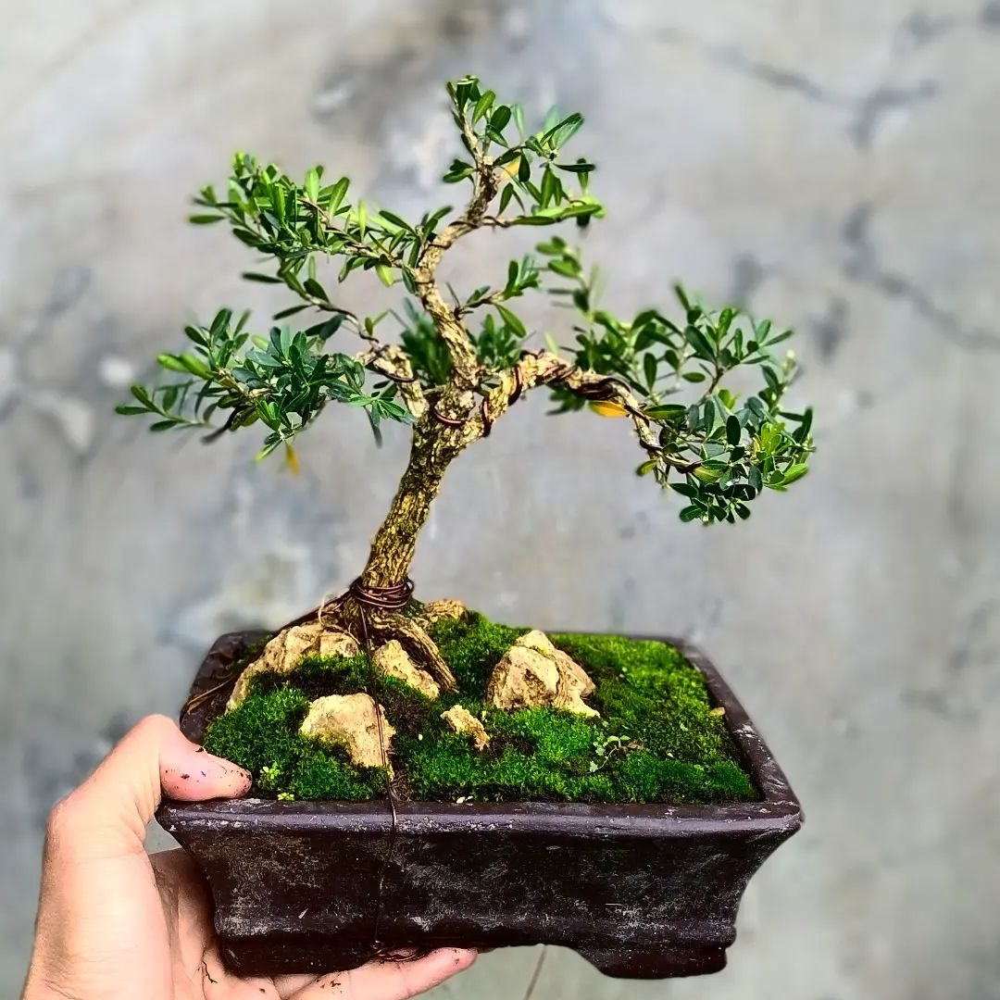
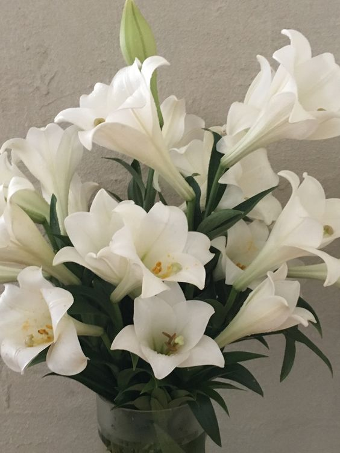

How technology has affected daily life and business
Jan 12, 2023 -by Nitika Rai
Technology has had a significant impact on daily life and business in the 21st century. In terms of daily life, technology has greatly impacted the way people communicate, access information, and go about their daily tasks.
In terms of business, technology has had a significant impact on how companies operate and compete. The Internet and other digital technologies have made it easier for businesses to reach and sell to customers all over the world. This has
led to the creation of many new business models, such as e-commerce and online marketplaces, which would not have been possible without the Internet.
Technology has also had a major impact on how businesses communicate with their employees and customers, as well as how they track and analyze data. Overall, technology has had a profound impact on both daily life and business in the 21st
century and will continue to do so in the future.
Ways Technology Impacts Our Lives: Communication
Transportation
Shopping
Work
Education
Healthcare
Entertainment
Banking and finance Agriculture
Manufacturing
Technology has both positive and negative impacts on daily life and business. Some of the negative impacts include:
Addiction: Overuse of technology can lead to addiction and negatively impact people's physical and mental health.
Job Loss: Automation and artificial intelligence have replaced many jobs, leading to unemployment and wage stagnation.
Social Isolation: Technology has decreased face-to-face communication, leading to social isolation and decreased emotional intelligence.
Cybersecurity Risks: Technology has increased the risk of cyber attacks, data breaches, and identity theft, affecting individuals and businesses.
Health Issues: Prolonged use of technology can lead to physical problems such as eye strain, back pain, and repetitive stress injuries.
Positive impact of technology on daily life and business is quite extensive. Some of the key benefits are:
Increased Efficiency: Technology has made many tasks and processes more efficient, reducing the time and cost required to complete them. For example, automation of repetitive tasks has allowed businesses to focus on more important tasks.
Convenience: Technology has made many aspects of daily life more convenient. For example, online shopping, banking, and access to information have made it easier for people to access the products and services they need.
Improved Communication: Technology has greatly improved communication, making it easier for people to connect with others globally. Social media, email, and instant messaging have made it easier to stay in touch with friends and family, and videoconferencing has made remote work and collaboration possible.
Access to Information: Technology has greatly increased access to information. The internet provides a wealth of information on almost any subject, making it easier to learn and stay informed.
Job Opportunities: Technology has created new job opportunities, such as software development and data analysis. The increased use of technology has also increased demand for IT professionals, digital marketers, and other technology-related roles.
Communication Technology has greatly improved communication, making it easier and faster to connect with people around the world. This has been especially important during the COVID-19 pandemic, as people have relied
on video conferencing tools to stay connected with colleagues, friends, and family.
Transportation Technology has also revolutionized transportation. From ride-sharing apps to electric and autonomous vehicles, technology is changing the way we move around.
Shopping Technology has transformed the way we shop, with the rise of e-commerce sites and mobile apps making it easier to purchase goods online. This has disrupted traditional brick-and-mortar retailers, who have had
to adapt to the shift towards online shopping.
Work Technology has changed the way we work, with many people now able to do their jobs remotely thanks to the internet and advances in communication tools. This has led to the rise of the gig economy, where people work
on a project-by-project basis rather than being tied to a traditional 9-to-5 job.
Education Technology has also had a major impact on education, with the widespread adoption of online learning platforms and tools for remote teaching. This has made it easier for people to access educational resources
from anywhere, at any time.
Healthcare Technology has had a major impact on healthcare, with the development of electronic health records, telemedicine platforms, and wearable devices that can track and monitor various aspects of a person's health.
These innovations have made it easier for healthcare providers to deliver care, and for patients to access medical services remotely.
Entertainment Technology has changed the way we consume entertainment, with streaming services and social media platforms providing endless options for movies, TV shows, music, and other forms of entertainment.
Banking and finance Technology has revolutionized the way we manage our money, with the rise of mobile banking apps, digital payment platforms, and online investment tools. This has made it easier for people to manage
their financial affairs, and has disrupted traditional financial institutions.
Agriculture Technology is also changing the way we produce and distribute food, with the use of precision agriculture techniques, such as GPS-guided machinery and sensors that monitor crop health. This has made
it possible for farmers to increase productivity and efficiency, while also reducing the environmental impact of agriculture.
Manufacturing Technology has transformed the manufacturing industry, with the adoption of automation and robotics making it possible to produce goods faster and more efficiently. This has led to changes in the way
we work, with many jobs being automated and the need for skilled technicians and engineers increasing.
Overall, technology has made many aspects of daily life and business more convenient, efficient, and connected.

Bonsai plants
Jan 23, 2023 -Nitika Rai
Bonsai plants are small trees or woody plants that are grown and cultivated in containers, usually pots. The goal of bonsai cultivation is Bonsai plants are typically trained.
There are many different types of plants that can be used for bonsai, including trees, shrubs, and even certain types of vines. Common bonsai plants include pine, juniper, maple, and elm, but many other plant species can be used as well. Some
popular bonsai plant species include:
Ficus: A popular choice for bonsai due to its versatility and ability to thrive in a variety of conditions.
Chinese Elm: A popular species for bonsai due to its small, delicate leaves and attractive bark.
Japanese Maple: Known for its beautiful fall foliage, the Japanese maple is a popular choice for bonsai.
Juniper: A hardy plant that is well-suited to bonsai cultivation.
Azalea: A flowering plant that adds a touch of color to a bonsai collection.
Bonsai plants can be grown indoors or outdoors, depending on the species and the climate in which they are grown. It is important to research the specific needs of a bonsai plant before attempting to grow it, as each species has its own
unique requirements for light, water, and temperature. Proper care and attention is essential for the health and longevity of bonsai plants.
Caring for a bonsai plant involves regular watering, fertilizing, and pruning to maintain its shape and size. Bonsai plants also require proper lighting, as they need a balance of sunlight and shade to thrive. Some bonsai plants may need
to be protected from extreme weather conditions, such as frost or strong winds.
Bonsai plants can be enjoyed by people of all ages and can be a rewarding hobby for those who enjoy gardening and the art of creating and shaping small trees. There are many resources available for those interested in learning more about
bonsai cultivation, including books, online forums, and local bonsai clubs.
There are many techniques and practices that are used in bonsai cultivation to create and maintain the desired shape and form of a bonsai plant. Some of the most common techniques include:
Pruning: Regular pruning is essential for shaping and maintaining the size of a bonsai plant. This can be done through techniques such as pinching and cutting back branches to encourage new growth and maintain the desired shape.
Wiring: Bonsai plants can be shaped and trained through the use of wire, which is wrapped around branches and stems to guide them into the desired position. The wire is typically left in place for several months before being removed.
Repotting: Bonsai plants should be repotted every few years, depending on the species and the size of the pot. Repotting involves removing the plant from its pot, trimming the roots, and replanting it in a new pot with fresh soil.
Fertilizing Bonsai plants require regular fertilization to provide the nutrients they need to grow and thrive. This can be done through the use of liquid fertilizers or slow-release fertilizers applied to the soil.
Pest control: Bonsai plants can be vulnerable to pests such as aphids and scale insects. These pests can be controlled through the use of natural or chemical pesticides, or by physically removing them from the plant.
It is important to research the specific care requirements of a bonsai plant before attempting to grow it, as each species has its own unique needs. Proper care and attention is essential for the health and longevity of bonsai plants.

Lilies: A Stunning and Versatile Bloom
Jan 25, 2023 -by Nitika Rai
Lilies are one of the most popular and recognizable flowers in the world, and for good reason. These stunning blooms come in a wide range of colors, sizes, and shapes, and their versatility makes them a popular choice for gardens, arrangements,
and special occasions.
Types of Lilies
There are many different types of lilies, including Asiatic lilies, Oriental lilies, trumpet lilies, and more. Each type of lily has its own unique features, from the shape and size of the flower to the fragrance and color. Asiatic lilies
are known for their brightly colored flowers and early blooming season, while Oriental lilies are prized for their large, fragrant blooms. Trumpet lilies have a distinctive shape that sets them apart from other lily varieties.
Caring for Lilies
Lilies are relatively easy to care for and can thrive in a variety of growing conditions. They prefer well-drained soil and plenty of sunlight, and they should be watered regularly to keep the soil moist. Fertilizing lilies every four
to six weeks can also help to promote healthy growth and encourage more blooms.
Using Lilies in Gardens and Arrangements
Lilies are a versatile flower that can be used in many different ways. In the garden, they can be planted as border plants, in beds, or in pots, and they can also be used to create stunning cut flower arrangements. Whether you prefer simple
bouquets or elaborate centerpieces, lilies are a beautiful and fragrant addition to any setting.
Symbolism and Significance
Lilies have been used for centuries to symbolize purity, innocence, and rebirth. They are often associated with the Madonna, and they are a popular choice for Easter and Mother's Day celebrations. In many cultures, lilies are also associated
with funerals and are used to express condolences.
In conclusion, lilies are a truly stunning and versatile flower that can be used in a variety of ways. From the garden to the vase, lilies are sure to add beauty and fragrance to any setting.